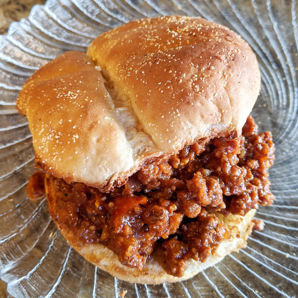

Meatloaf

Ingredients
- 680 grams extra-lean ground beef
- ½ onion, diced
- 1 green pepper, diced
- 2 cloves garlic, minced
- 2 cups water, divided
- ¾ cup ketchup
- 2 tablespoons brown sugar
- 1 teaspoon Dijon mustard
- 1½ teaspoons salt, or to taste
- ½ teaspoon ground black pepper
- 1 dash Worcestershire sauce
- 1 pinch cayenne pepper, or to taste
Steps
- Place ground beef and onion in a large skillet over medium heat; cook and stir until beef is browned and crumbled, about 10 minutes.
- Stir in green pepper and garlic; cook and stir until softened, 2 to 3 minutes. Add 1 cup water and stir, scraping the pan to dissolve any brown flavor bits from the bottom of the skillet.
- Stir in ketchup, brown sugar, Dijon mustard, salt, black pepper, and Worcestershire sauce. Add remaining 1 cup water and bring mixture to a boil. Reduce heat to low and simmer, stirring occasionally, until liquid has evaporated and mixture is thick, about 40 minutes.
- Season with salt, black pepper, Worcestershire sauce, and cayenne pepper.